Обсмажка
Бренд, лендинг та інтернет-магазин для невеликої кавової обсмажувальні. Бренд вигаданий, а все інше зроблено так, як для справжнього клієнта.
- Формат
- Концепт для портфоліо
- Що зроблено
- Логотип і стиль, лендинг, магазин
- Інструменти
- HTML, CSS, JavaScript, SVG
- Екрани
- Від 320 до 1440 px
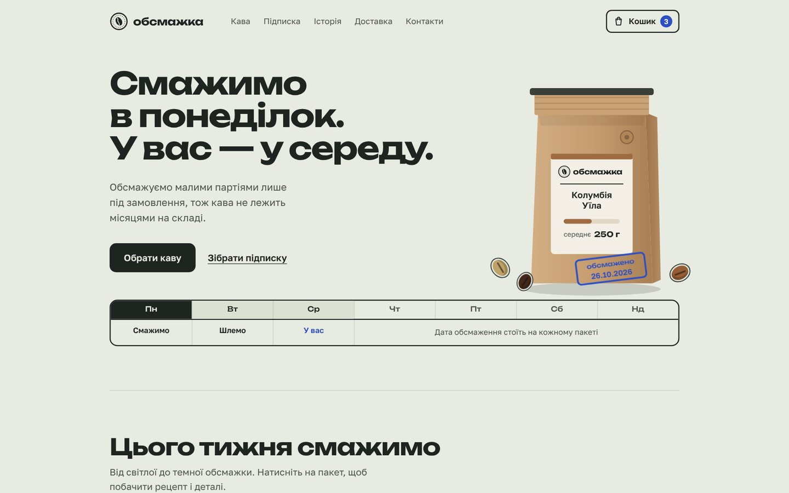
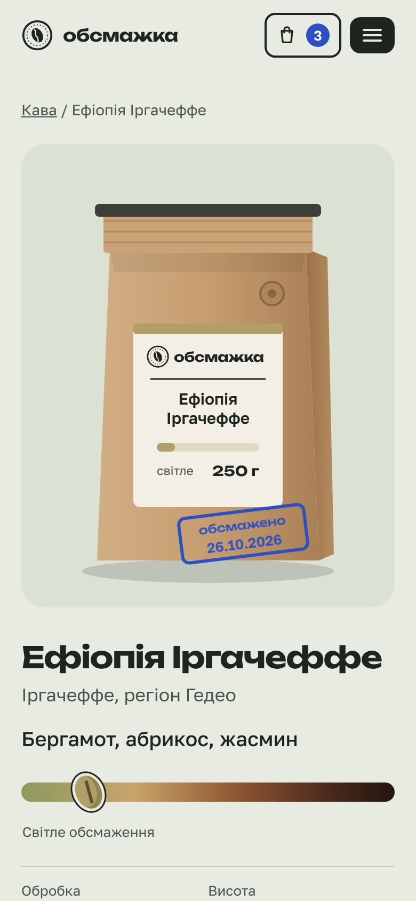
Задача
Обсмажувальня смажить каву малими партіями щопонеділка й продає її поштою та за підпискою.
Її конкуренти — супермаркети й великі бренди, у яких кава лежить на складі місяцями. Сайт мав за кілька секунд пояснити головну перевагу, свіжість, і дати замовити каву без дзвінків і переписки.
Звідси два продукти: лендинг, який веде до підписки, і повноцінний магазин з каталогом, кошиком та оформленням замовлення.
Головна ідея
Свіжість важко довести словами, тому ми показали її як графік. Перше, що бачить відвідувач, — тиждень, де понеділок — день обсмаження, вівторок — відправка, а середа — кава вже вдома.
Ту саму думку повторює синій штамп з датою на кожному пакеті. Дату не вписано вручну: сайт сам підставляє останній понеділок, тож вона завжди актуальна.
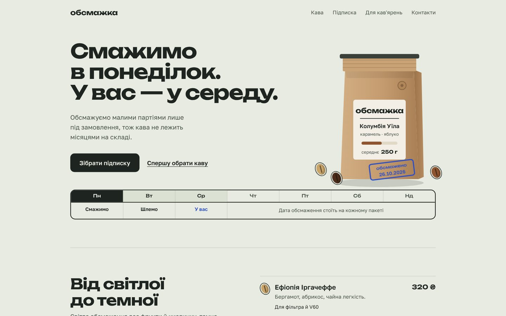
Айдентика
Палітру взято з матеріалів самої обсмажувальні, а не з каталогу трендів. Типовий «кремовий фон і теракотовий акцент» ми свідомо відкинули: так виглядають сотні кавових сайтів.
- Мішковина
#E7EBE1Фон сторінки. Холодний сіро-зелений замість звичного кремового. - Крафт
#C49B6EПакети з кавою, головна ілюстрація. - Шкала обсмаженняВід зеленого зерна до еспресо. Показує, наскільки обсмажено кожен сорт: на шкалі, на етикетці, у кольорі зерна.
- Штамп
#2D4FC4Єдиний яскравий колір. Лише для дати обсмаження, кількості в кошику й підсвітки. - Графіт
#1E2420Текст, кнопки, рамки.
Правила набору, яких дотримано по всьому сайту:
- короткі слова («в», «у», «з», «на», «для») не лишаються в кінці рядка;
- заголовки розбито за змістом: кожне речення з нового рядка, без «висячих» літер;
- розмір головного заголовка залежить від ширини колонки, тому широкий шрифт не вилазить за край на жодному екрані.
Ілюстрації без фото
Фото кави легко купити на стоках, але тоді сайт виглядає як сотні інших. Тому всю графіку намальовано кодом (SVG):
- Пакет. Один шаблон на всі сорти: назва, колір смужки й ступінь обсмаження беруться з даних товару. Додати новий сорт — це один рядок, а не нова фотосесія.
- Обсмажувач. На сторінці історії він анімований: обертається барабан із зерном, з труби йде дим, на столі охолодження крутиться мішалка.
- Зерна. На шкалі й у списку сортів кожне зерно має колір свого обсмаження.
Уся графіка займає кілька кілобайтів і лишається чіткою на будь-якому екрані.
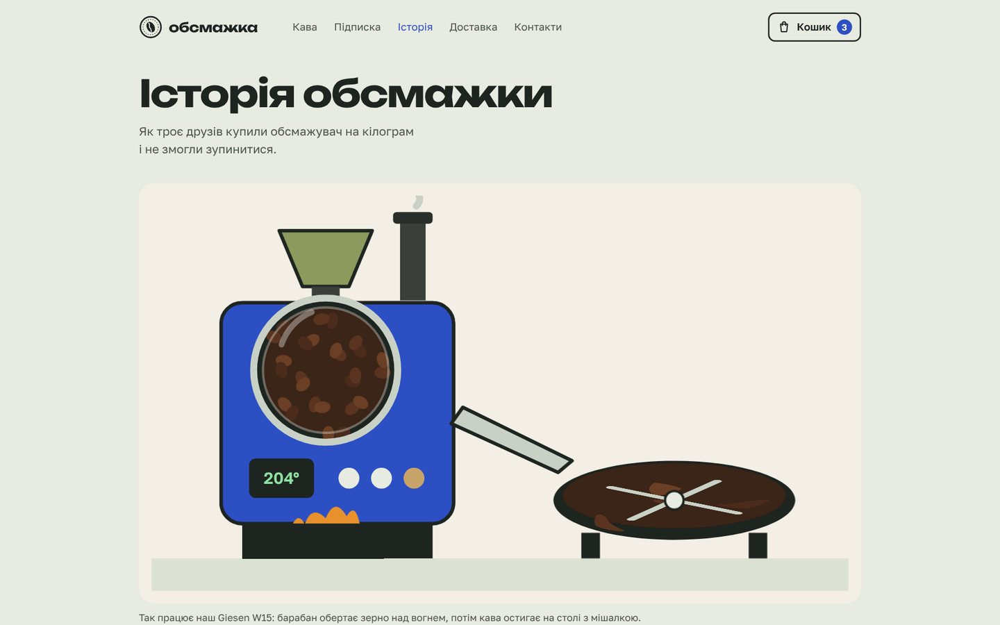
Лендинг
Одна сторінка, яка веде до підписки:
- графік тижня й пакет зі штампом, який «ставиться» під час завантаження;
- три сорти тижня на шкалі обсмаження;
- конструктор підписки: вага, частота, помел, ціна рахується одразу;
- блок для кав'ярень і офісів, контакти;
- мобільне меню й плавна прокрутка до потрібного блоку: блок стає по центру екрана й на секунду підсвічується, щоб було видно, куди привело меню.
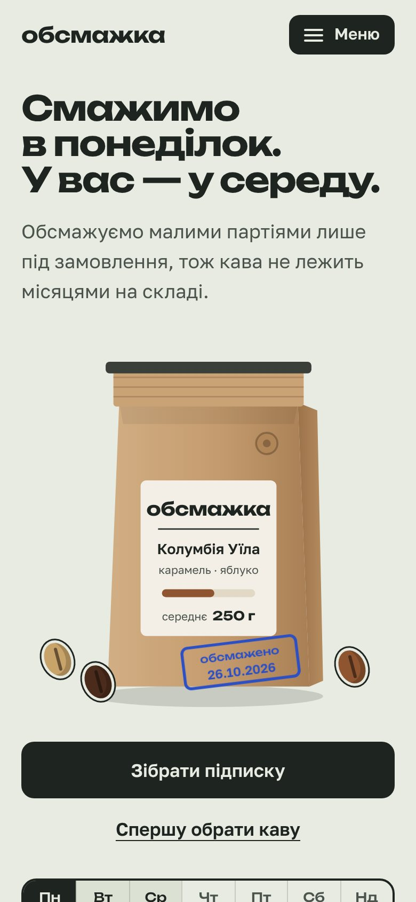
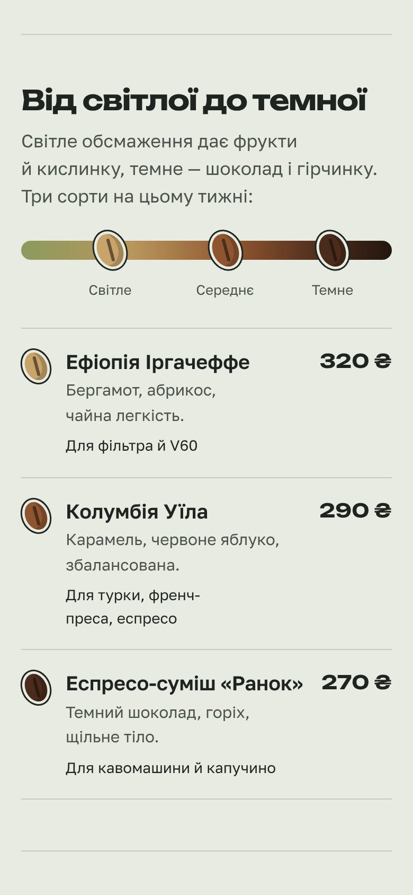
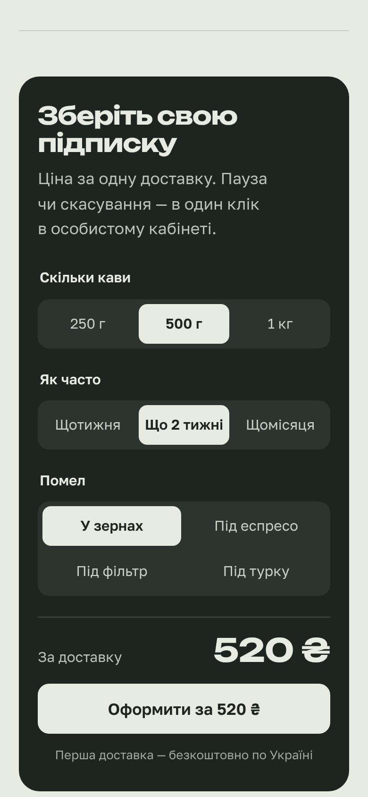
Інтернет-магазин
Вісім розділів, які працюють як справжній магазин:
- Каталог із фільтрами за обсмаженням і способом заварювання;
- Картка сорту: обробка, висота, різновид, рецепт саме для цього сорту, вибір ваги й помелу; пакет на картинці змінюється разом із вагою;
- Кошик: кількість, видалення, підказка «ще N ₴ до безкоштовної доставки»;
- Оформлення: перевірка імені й телефону з зрозумілими підказками, різні поля для відділення, поштомата й кур'єра;
- Підтвердження з номером замовлення у вигляді того самого штампа;
- Панель власника: список замовлень і зміна статусу «нове → відправлено → отримано»;
- Історія бренду та доставка з частими питаннями.
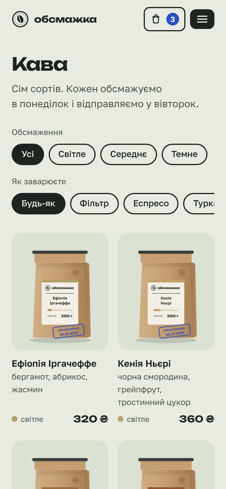
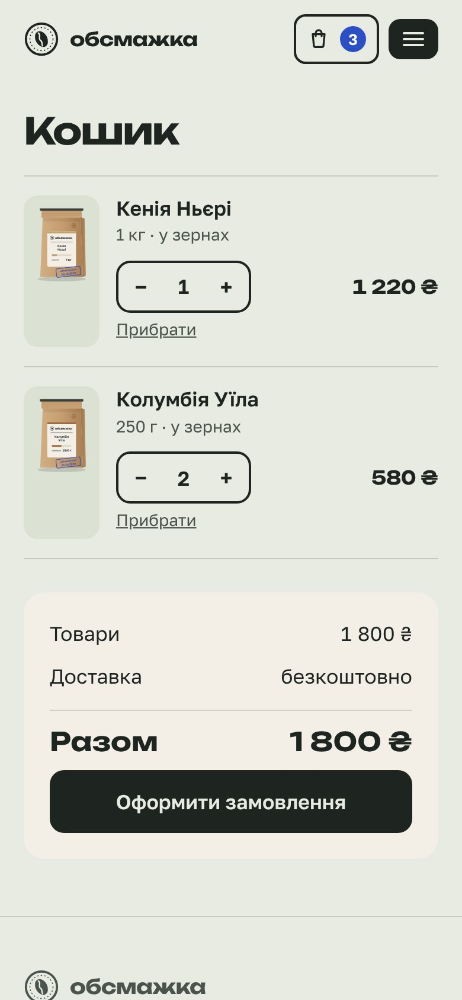
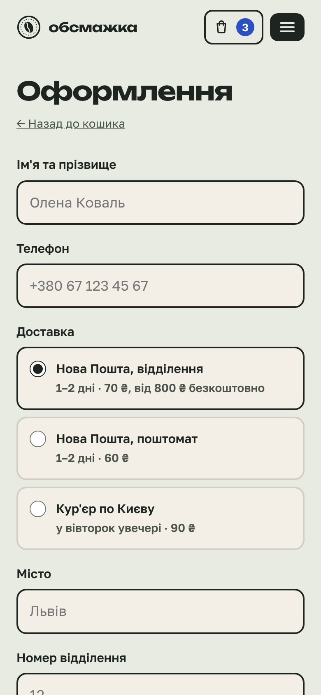
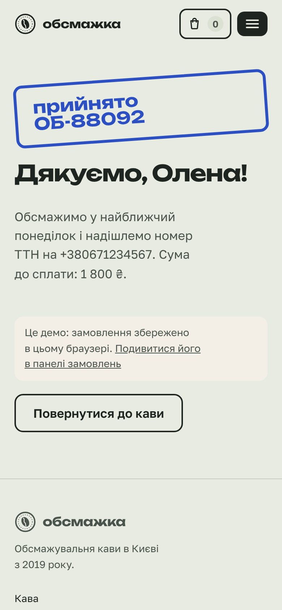
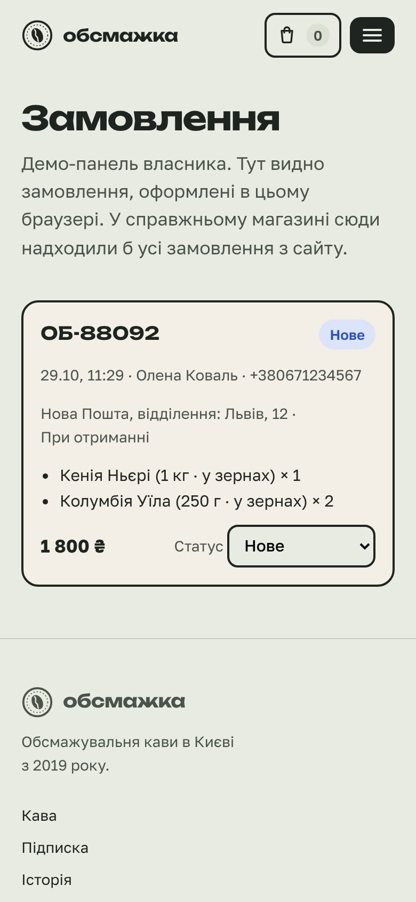
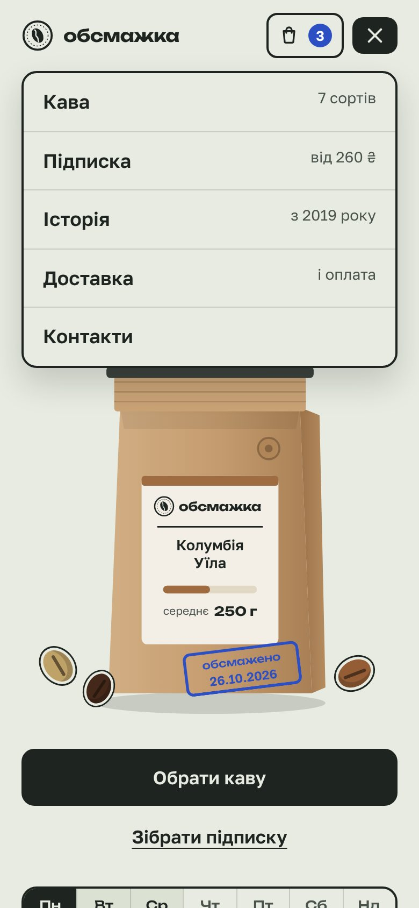
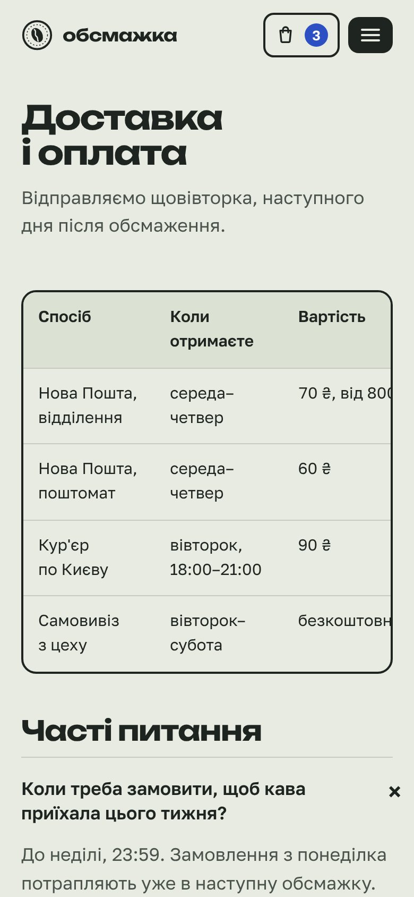
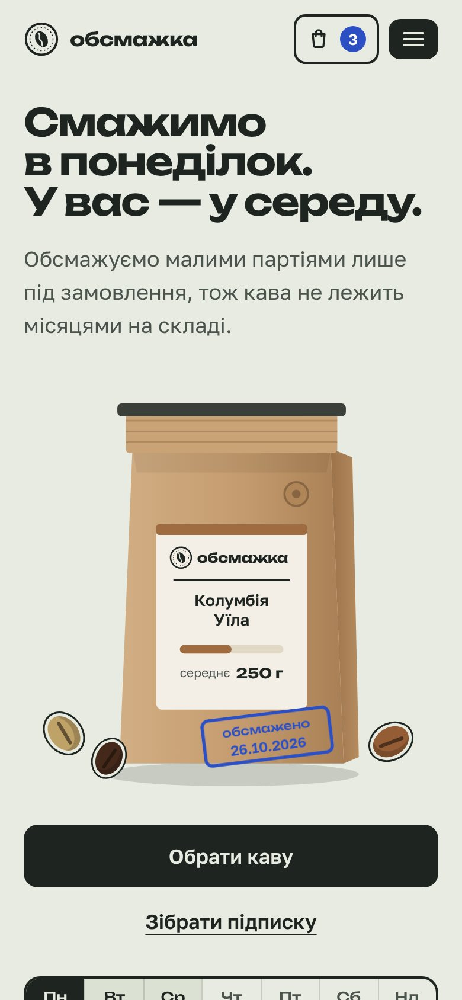
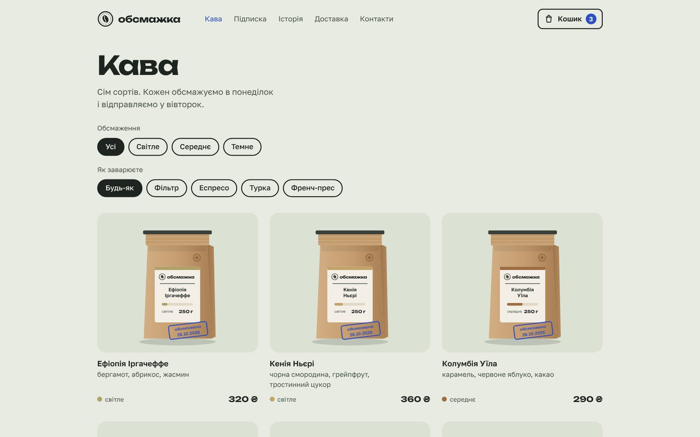
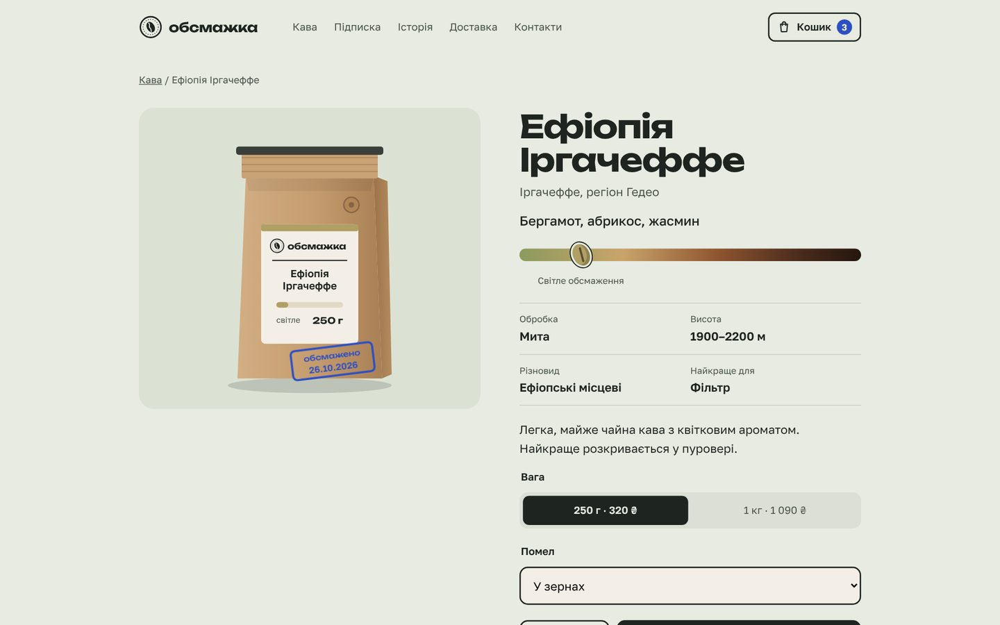
У демо-версії замовлення зберігаються в браузері відвідувача. Для справжнього магазину до сайту треба підключити сервер або CRM для замовлень і онлайн-оплату.
Технічно
Як ішла робота
- Перший варіант лендингуКремовий фон і теракотовий акцент виглядали шаблонно, тож від них відмовилися.
- Новий напрямМішковина, крафт і штамп дати; графік тижня став головним елементом.
- Правки з телефонуМобільне меню й кнопки на всю ширину замість притиснутих до лівого краю.
- НавігаціяПлавна прокрутка до блоку, блок по центру екрана й коротка підсвітка.
- ДеталіЦифри на шкалі замінено на зерна відповідного кольору, підписи вирівняно по центру зерен.
- ТипографікаЗаголовок без «висячих» слів, нерозривні пробіли по всьому тексту.
- ІлюстраціяНамальований пакет кави зі штампом, що з'являється з анімацією.
- МагазинЛоготип, каталог, картки, кошик, оформлення, історія, доставка й панель замовлень.
- Фінальна перевіркаНа ширині 320 px знайшли шапку, що вилазила за край, і виправили її.